第２回 春のシンポジウム
「最先端技術が切り拓くレドックスバイオロジー」
主催：レドックスR&D戦略委員会
共催：新学術領域研究・生命金属科学、学術変革領域研究 (A)・硫黄生物学、東北大学大学院薬学研究科
日 時：令和４年 ３月４日（金）
場 所：オンライン（Zoom）
世話人：斎藤 芳郎（東北大学大学院薬学研究科）
フライヤー
要旨集
3月4日（金）
9：55 開会の挨拶
10：00―11：00 若手研究者セッション
「クライオ電子顕微鏡単粒子解析によるリボソーム構造解析の実際とMg結合の可視化」
東北大学大学院生命科学研究科 横山 武司
「小胞体における亜鉛とレドックスのクロストークの新規メカニズムの発見」
東北大学多元物質科学研究所 天貝 佑太
「超硫黄タンパク質としての神経成長抑制因子(GIF/MT3)のレドックス制御」
筑波大学医学医療系 新開 泰弘
「Aminoacyl-tRNA synthetaseによる超硫黄分子合成機構の解明」
東北大学大学院医学系研究科 Jung Minkyung
11：00―11：45 基調講演
「質量分析法を用いたハイブリッド・バイオイメージング法の開発」
東京大学大学院理学系研究科 平田 岳史
（お昼休み・運営委員会）
13：00―14：40 生命金属科学シンポジウム
「鉄の生体内動態の分子科学」
兵庫県立大学大学院理学研究科 城 宜嗣
「病原性微生物の金属取り込み蛋白質群を標的とした抗菌剤開発」
東京大学大学院工学系研究科 中木戸 誠
「ヘム依存性転写因子Irrにおける転写制御機構」
北海道大学大学院理学研究院 石森 浩一郎
「ネイティブ質量分析を利用したタンパク質への金属イオン結合解析」
慶應義塾大学理工学部 古川 良明
14：50―15：35 基調講演
「活性酸素シグナル〜酸素生物学〜そして硫黄生物学：三つの領域を超えて見えてきた世界」
東北大学大学院医学系研究科 赤池 孝章
15：40―17：20 硫黄生物学シンポジウム
「転写因子NRF2による超硫黄を利用したエネルギー代謝とストレス応答」
東北大学加齢医学研究所 本橋 ほづみ
「ラマン顕微鏡を用いた硫黄・細胞内状態計測」
東北大学大学院薬学研究科 中林 孝和
「発がん因子PRLの活性中心システイン硫黄原子の化学修飾による機能制御」
大阪大学微生物病研究所 三木 裕明
「必須微量元素セレンと超硫黄分子による生体防御とレドックス―カルコゲンによるシグナルネットワーク」
東北大学大学院薬学研究科 斎藤 芳郎
17：30―18：30 産官学連携セッション
「食品中の超硫黄分子の解析法の開発－超硫黄を基軸とした食品素材の開発にむけて－」
大阪府立大学大学院理学系研究科 居原 秀
「皮膚中DJ-1のバイオマーカーとしての応用」
株式会社ファンケル総合研究所 石渡 潮路
「シオノギ流DXの取組み-産官学連携による社会課題への取組み-」
塩野義製薬株式会社DX推進本部 小林 博幸
閉会の挨拶


 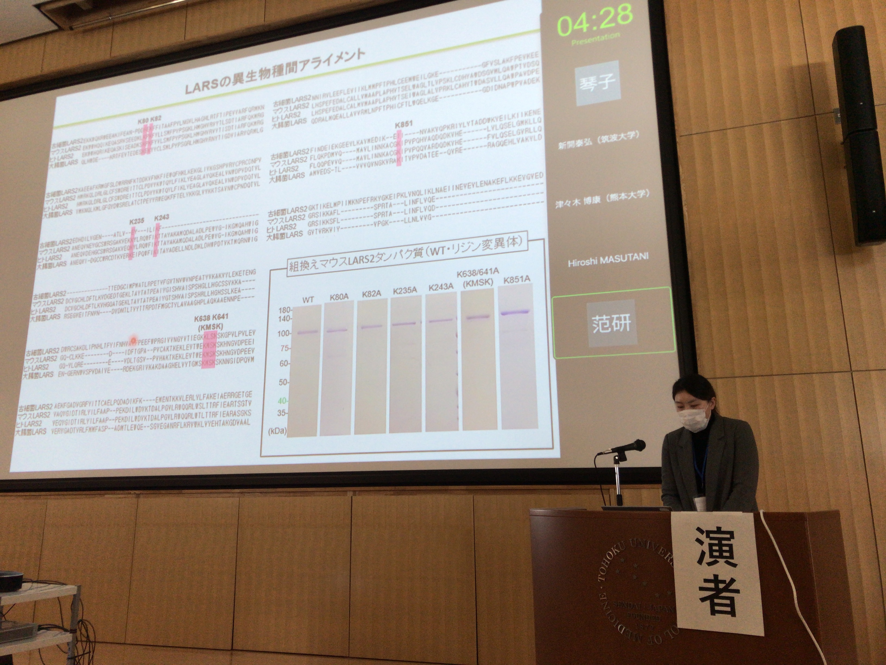
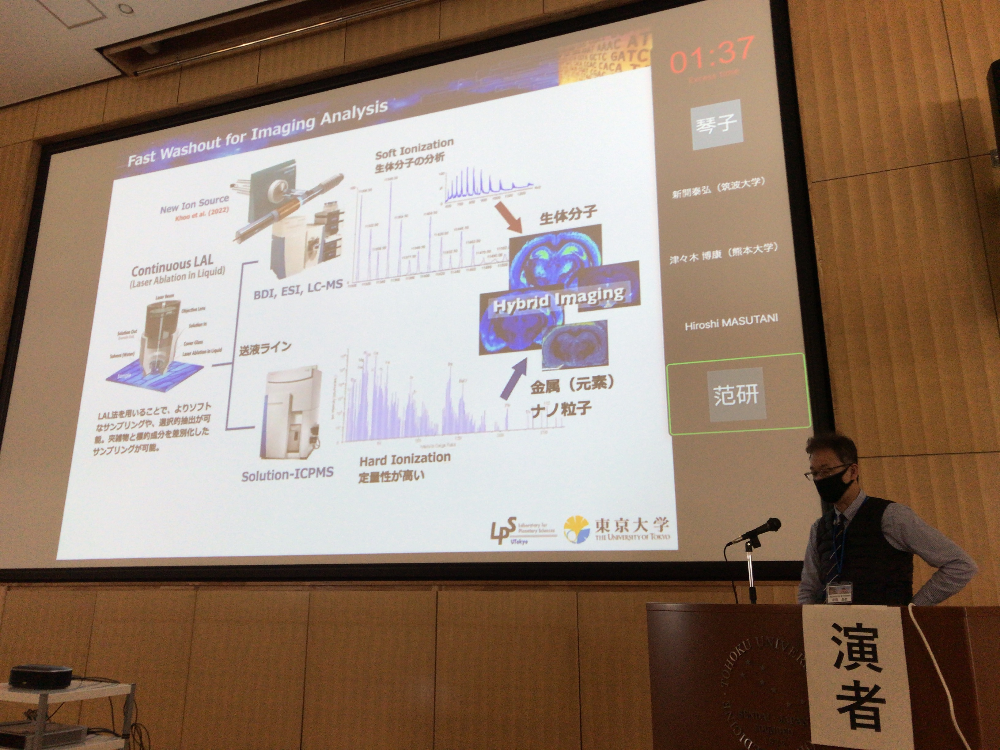
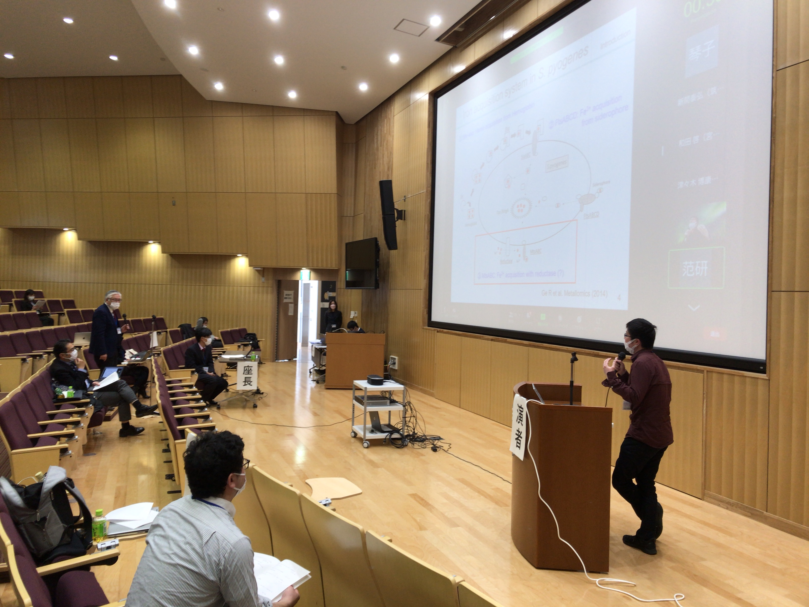
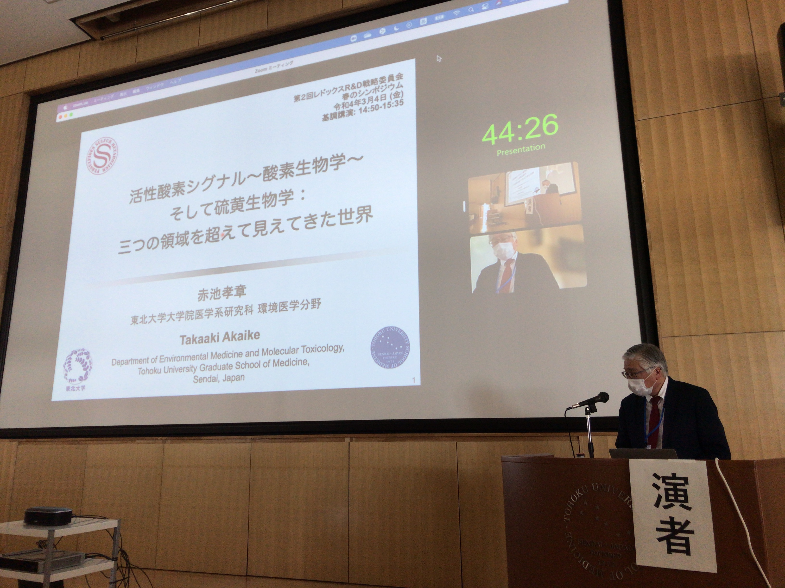
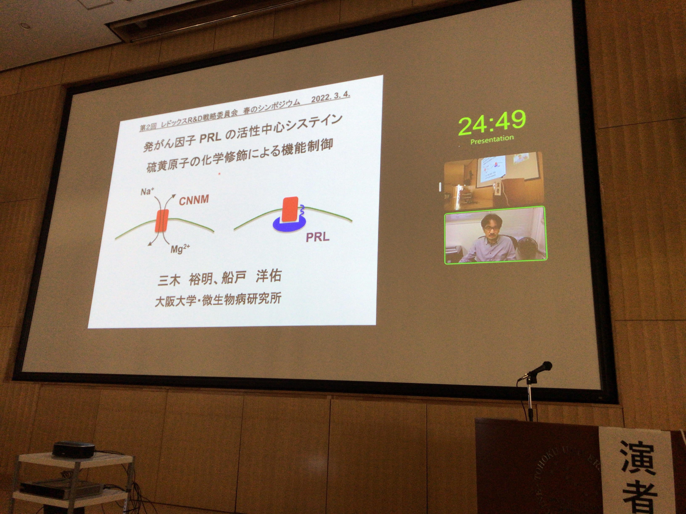
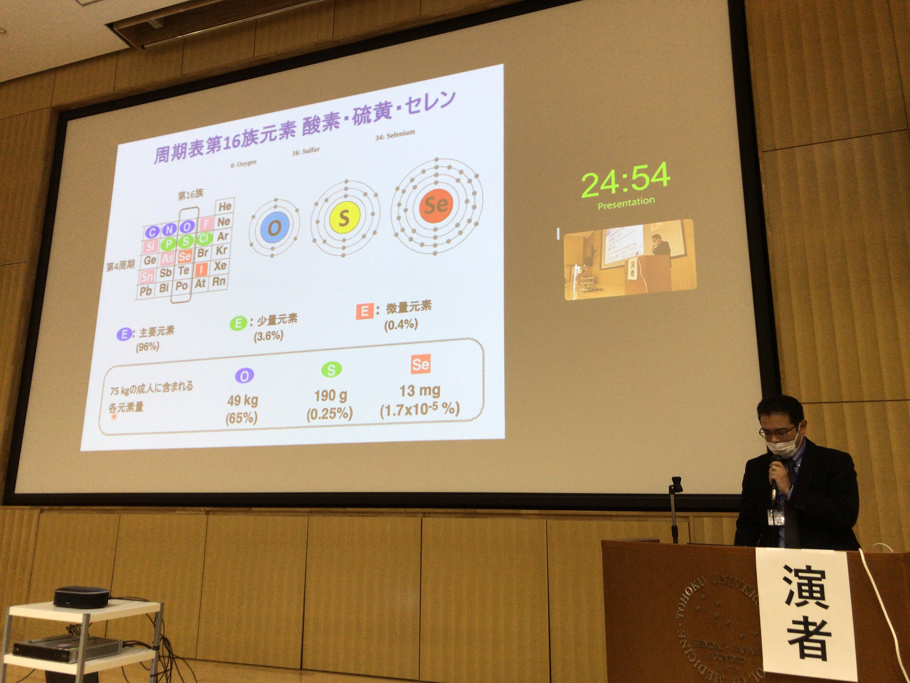
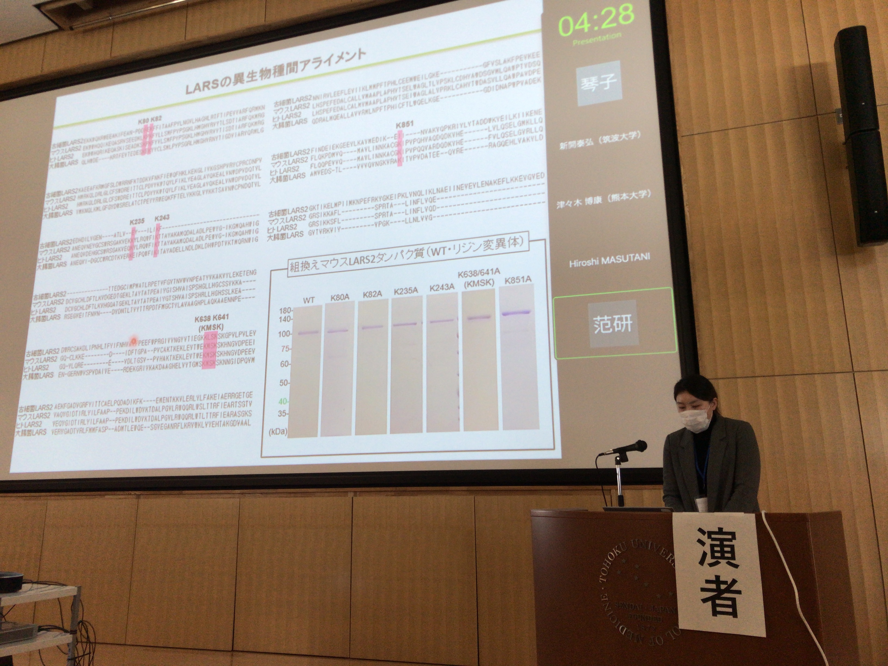
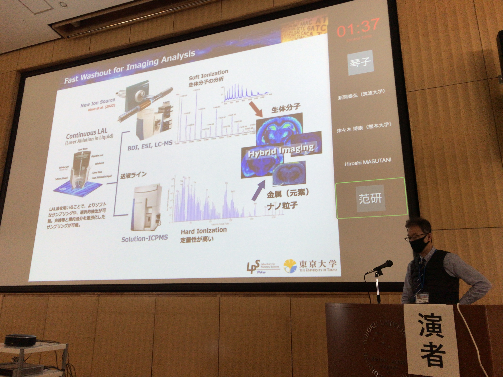
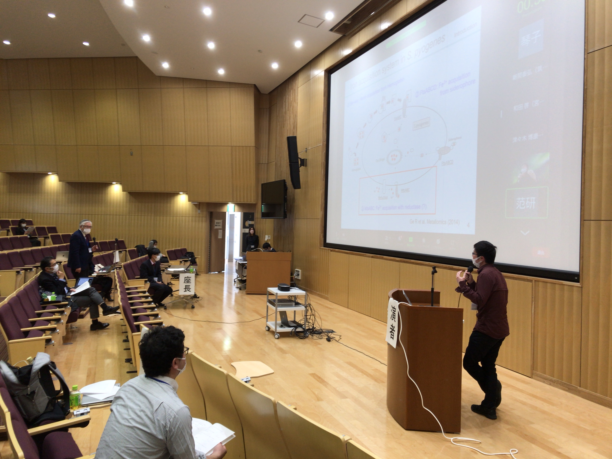
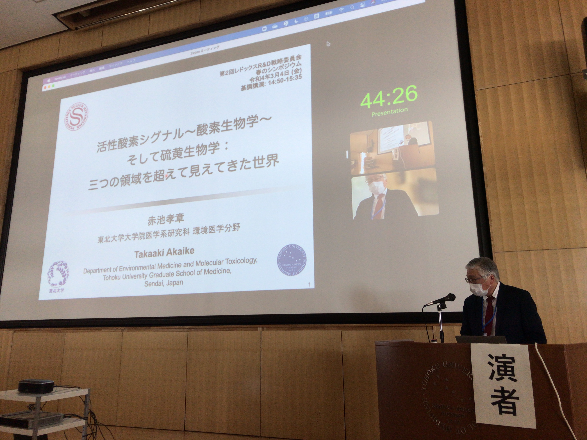
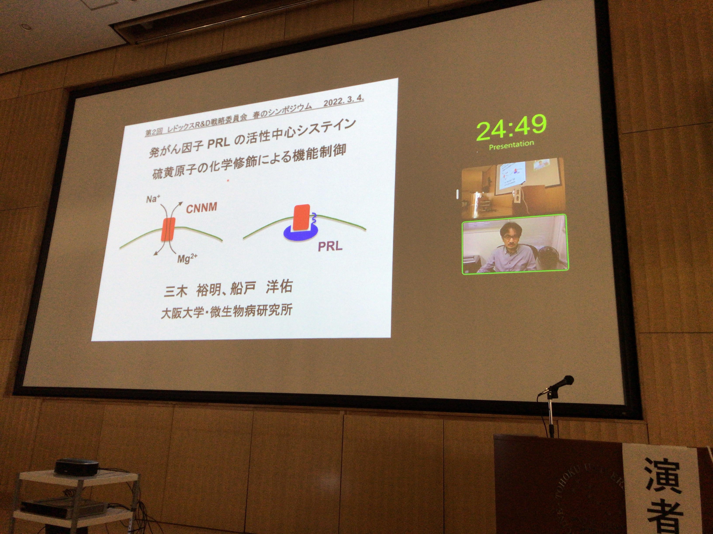
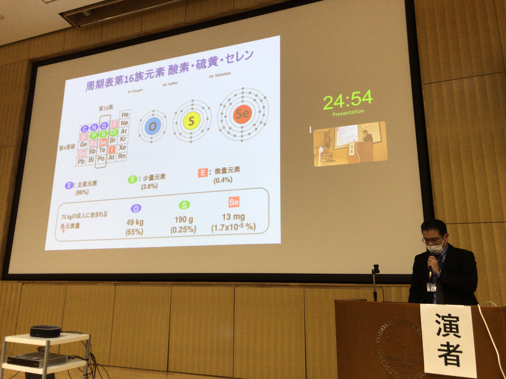